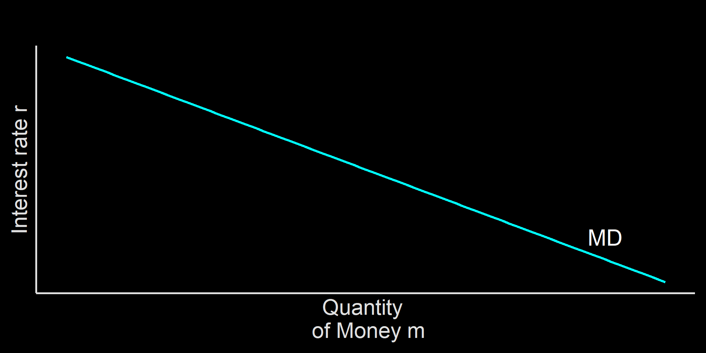
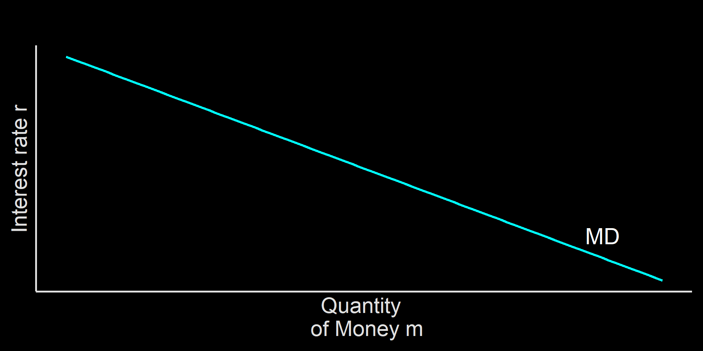
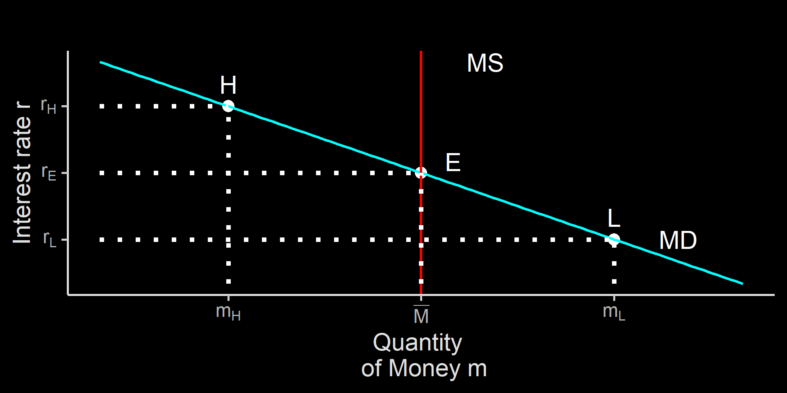
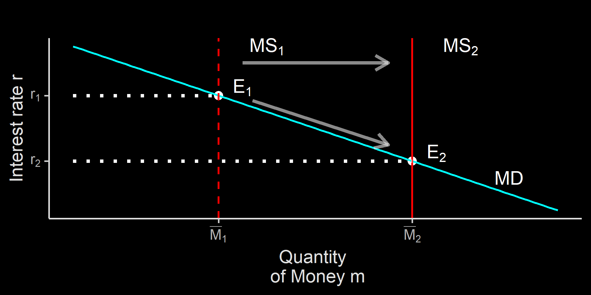
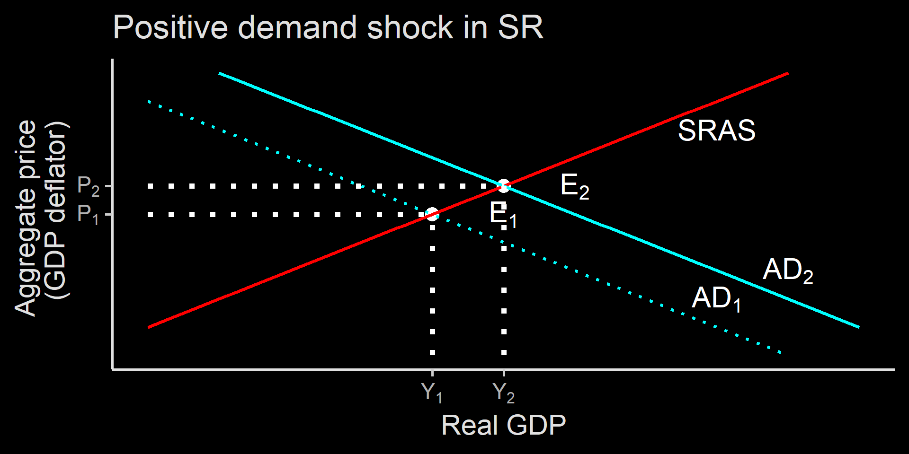
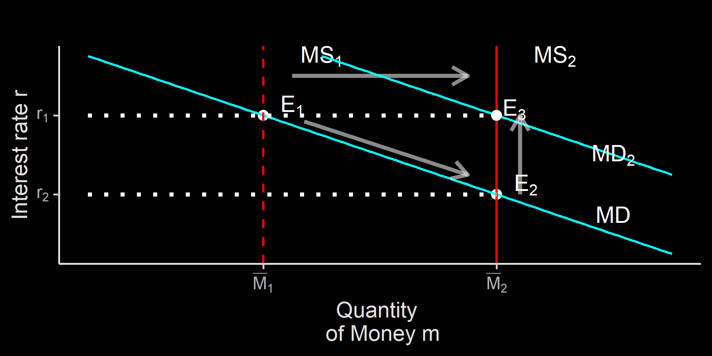
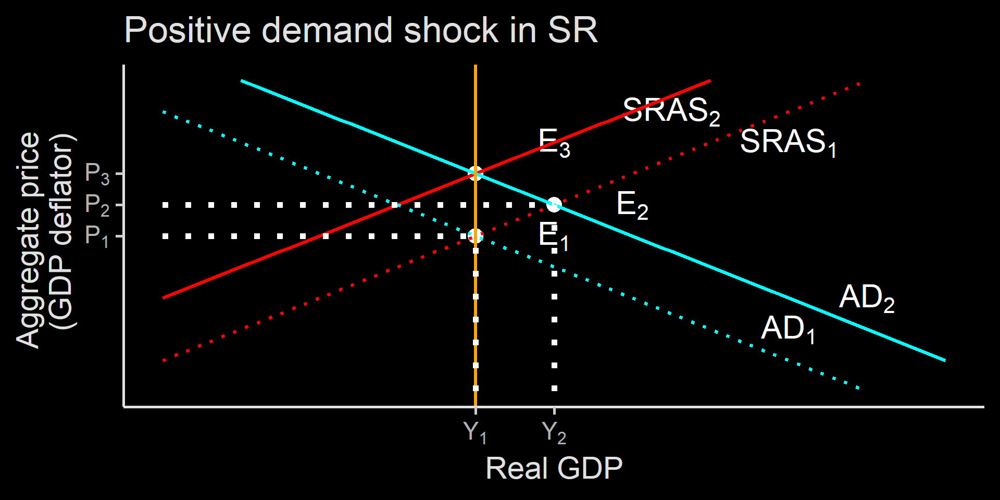

Pertemuan 12
We have yet the third market: Money market.
Money market completes the macroeconomics relationship: growth, unemployment and inflation.
We will learn supply and demand of money, with interest rate as its price.
We covered how financial system works.
We can say that interest rate is the price of money.
As interest rate increase, the opportunity cost of holding money increases.
if interest rate is high, it is better to hold less money and put them in the deposit account.
remember the lesson last week about money creation:

money demand is downward sloping
changes in interest rate leads to movement along the curve:
Other changes leads to a shift in the money market
Changes in aggregate price level. When price is high, you need more cash in hand to purchase them. When I was young, going out with Rp100k in hand is enough to buy dinner and movie tickets. Now?
Changes in real GDP. As money is used to buy things, when there are more things to buy, there are more money demanded in the economy.
Changes in institution. Rules such as reserve requirements matter: higher reserve means less flexibility in creating money.
We have learned that money is created by the banking system.
However, the main driver of money creation is the central bank.
Bank Indonesia controls money supply in three ways:
Three main tools for BI to control money supply:
Open-market operations is buying and selling treasury bill (eg Sertifikat Bank Indonesia, SukBI, etc). BI sells t-bill when they want to reduce money supply, and buys them when otherwise.
Discount windows is opened when banks needed liquidity and BI provide them with interest rate. The interest rate BI charge to banks is called Repo rate (BI 7DRR). Low repo rate allows banks to expand money supply.
Reserve requirements. When liquidity is needed, BI will reduce reserve requirements so banks have more money to lend to people. This is the case during COVID-19 recession.

This is called liquidity preference model of interest rate.
BI sets how much money in the market by setting interest rate. Effectively, BI controls the movement of MS.
When BI wants less money circulated, they crank-up interest rate by using its three tools.
Suppose economy booms and demand for money at \(L\), but BI keeps MS at \(\overline{M}\).
At \(L\), money demand is \(M_L\) and interest rate is at \(r_L\)
For those who want to sell non-money asset, they has to offer higher interest rate.
Which cranks up general interest rate and reduce money demand back to \(\overline{M}\)

Suppose the cenral bank issue expansionary monetary policy either by purchasing t-bill or reducing repo rate.
The policy pushes money to the banking system, which leads banks to reduce their interest rate.
Lower interest rate lower borrowing costs, create more money in circulation.
In the previous week, we touched a bit on what moves AD curves.
When BI increase money supply:
When BI decrease money supply:
Central bank should only reduce interest rate when output is below potential output.
The reason is the same as the government:
In fact, inflation is the main mandate of BI, NOT output nor unemployment.
The main mandate of BI is to maintain the value of IDR:
Inflation targeting framework (ITF) is a framework where the basis of BI’s monetary policy is inflation.
BI announce its inflation target (together with Ministry of Finance), and vows to use monetary policy to get that inflation rate.
When inflation is below target, BI will be expansive, whereas high inflation will leads BI to rise interest rate.
Indonesia is an open economy: inflation can happen due to cheap IDR. This is why BI also intervene in the exchange rate market.
| Year | Actual Inflation | Target Inflation | End of Year BI Rate |
|---|---|---|---|
| 2006 | 6.60 | 8.0 | 9.75 |
| 2007 | 6.59 | 6.0 | 8.00 |
| 2008 | 11.06 | 5.0 | 9.25 |
| 2009 | 2.78 | 4.5 | 6.50 |
| 2010 | 6.96 | 5.0 | 6.50 |
| 2011 | 3.79 | 5.0 | 6.00 |
| 2012 | 4.30 | 4.5 | 5.75 |
| 2013 | 8.38 | 4.5 | 7.50 |
| 2014 | 8.36 | 4.5 | 7.75 |
| 2015 | 3.35 | 4.0 | 7.50 |
| 2016 | 3.02 | 4.0 | 4.75 |
| 2017 | 3.61 | 4.0 | 4.25 |
| 2018 | 3.13 | 3.5 | 6.00 |
| 2019 | 2.72 | 3.5 | 5.00 |
| a Source: BI |
When inflation was high, BI rate is also high. High BI rate is supposed to have money absorption effect.

When the central bank increase money supply, interest rate goes down, leads to inrease investment and consumption.
AD shifts to the right, output go up to \(Y_2\) while aggregate price level increases to \(P_2\)

The central bank can either pull money supply back, or keep money supply high.
If money supply stay high, because aggregate demand and aggregate price both go up, MD shifts to the right, increasing money demand.
In the long-run, this push interest rate back up to the original position.

Increase of interest rate and wage rate in the long run leads to lower supply (SRAS shifts to the left)
In the end, output level is back to normal, but prices go up (inflation)
The central bank failed to keep GDP and employment high, sacrifices its main target which is inflation.
Often, many government asks the central bank to finance their expansive program instead of stabilizing prices.
But when the economy is in its normal state, expansionary monetary policy will only leads to higher inflation.
This is called neutrality of money, that is, during normal times, you can’t boost real GDP because increased prices will neutralize the higher amount of money.
The central bank (and the government) have very important job in mitigating recession and stabilizing the economy.
It is not easy, however:
That is why inflation targeting is important, as inflation is the sign of overheating economy.
During a recession:
Note that the central bank does not dictate interest rate charged by private banks.
BI set repo rate to increase incentive for banks to expand their lending.
However, there are possibilities that consumer banks do not follow the rate set by BI rate.
Banking sector can become oligopolistic when there are high barriers to entry.
When barriers to entry to banking is high but demand for lending exist, illegal lending pops-up, e.g.:
Third problem is what plague advance countries: zero-lower bound. In advance countries, interest rate is so low, it has to go negative to be lowered.
De facto wise, interest rate is already negative in some countries if you consider admin fee. But we still use banks amid convenience.
When monetary policy isn’t effective, the central bank can turn to the government.
Instead of selling t-bill to banks, BI can sell t-bill straight to the government to finance \(G\)
This effectively turns monetary policy to fiscal policy.
However, this method risks hyper-inflation as in 1966. In fact, since it is in the government’s interest to grow GDP, it can ask central bank to purchase t-bill even during normal times.
Macroeconomics essentially discussing relationship between aggregate demand, aggregate supply, aggregate prices, unemployment, interest rate and money supply.
These understandings are important to make sense of macroeconomic news.
However, we have not discuss one crucial thing: international economics.
Next-week we will learn one more important indicator: balance of trade and balance of payment.
Further, we will see how exchange rate and international credit market plays a role in the economy.